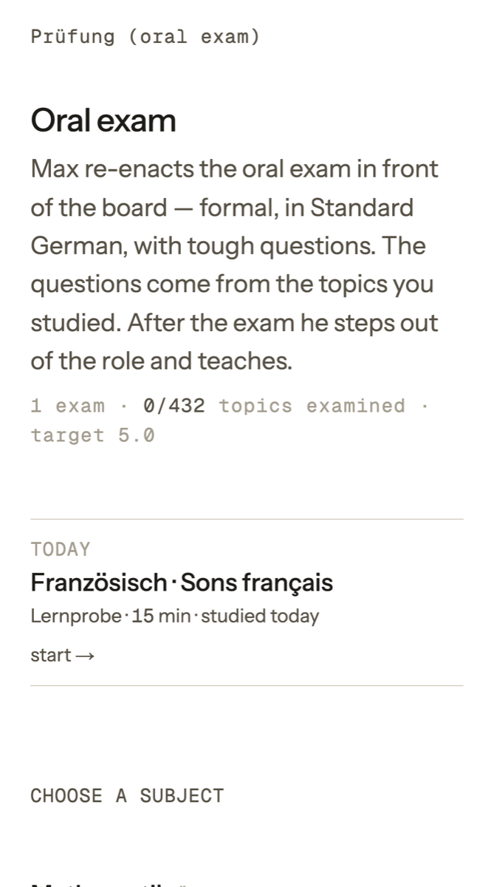
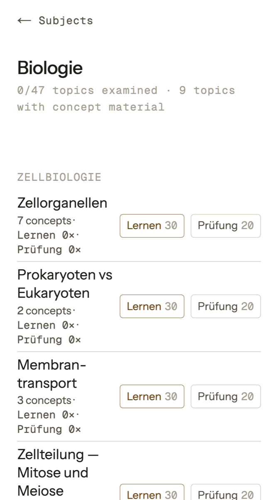
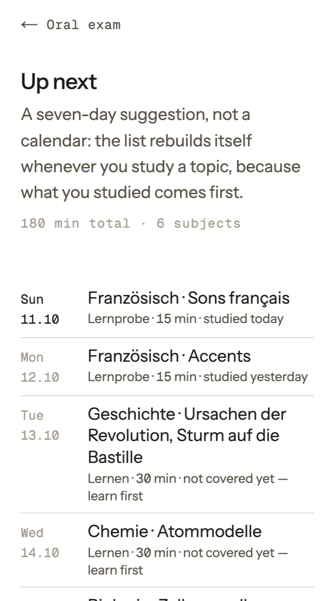

ProductProdukt
A tutor that talks, listens and examines.Ein Tutor, der spricht, zuhört und prüft.
Everything MAX does in a session — and the rules it follows so that practice is as honest as the real exam.Alles, was MAX in einer Sitzung tut — und die Regeln, mit denen das Üben so ehrlich ist wie die echte Prüfung.
Six ways to practise.Sechs Arten zu üben.
| SessionSitzung | What happensWas passiert | LengthDauer |
|---|---|---|
| LearnLernen | Today's concepts, unit by unit, with the mastery loop. Units that don't hold come back at the end.Die Begriffe des Tages, Einheit für Einheit, mit der Lernschleife. Was nicht sitzt, kommt am Ende nochmals. | 50 min |
| ExamPrüfung | A full oral exam simulation with follow-ups and trap questions, then debrief and grade.Eine vollständige mündliche Prüfungssimulation mit Nachfragen und Fangfragen, danach Besprechung und Note. | 20 min |
| Quick checkLernprobe | A short exam on two concepts — is it ready?Eine kurze Prüfung zu zwei Begriffen — sitzt es? | 15 min |
| DeepeningVertiefung | Exam format on a focus topic the student chose.Prüfungsformat zu einem selbst gewählten Schwerpunkt. | 20 min |
| Blitz reviewBlitz-Wiederholung | Four earlier topics, a few questions each — spaced repetition by voice.Vier frühere Themen, je einige Fragen — Wiederholung im Gespräch. | 18 min |
| Literature talkWerkgespräch | The oral exam on the reading list (German), based on the student's own reading notes.Die mündliche Prüfung zur Werkliste (Deutsch), auf Basis der eigenen Lesenotizen. | 20 min |
A unit counts only when it really holds.Eine Einheit zählt erst, wenn sie wirklich sitzt.
ExplainErklären
MAX explains the unit in two or three short chunks, each with an everyday example, and checks after each chunk.MAX erklärt die Einheit in zwei, drei kurzen Häppchen, jeweils mit einem Alltagsbeispiel, und fragt nach jedem Häppchen nach.
Explain backZurückerklären
The student explains it in their own words, in full sentences — not keywords.Der Schüler erklärt es in eigenen Worten und ganzen Sätzen — nicht in Stichworten.
New exam questionNeue Prüfungsfrage
A question at exam level that is not a copy of the explanation — other direction, other example, a why-question.Eine Frage auf Prüfungsniveau, die nicht das Erklärte wiederholt — andere Richtung, anderes Beispiel, eine Warum-Frage.
Decide — strictlyEntscheiden — streng
Only a correct, complete answer without any help counts. The screen enforces it: a unit cannot be closed too early, and after a correction the student must answer a new question unaided.Nur eine richtige, vollständige Antwort ohne Hilfe zählt. Der Bildschirm erzwingt das: Eine Einheit kann nicht zu früh abgeschlossen werden, und nach einer Korrektur muss der Schüler eine neue Frage ohne Hilfe beantworten.
Again, differentlyNochmal, anders
Units that did not hold return at the end of the session, explained in a completely different way.Einheiten, die nicht sassen, kommen am Ende der Sitzung zurück — ganz anders erklärt.
When the student says «I don't understand», MAX never moves on: it explains the same content again, simpler and through a different picture, until the student can explain it alone.Sagt der Schüler «Ich verstehe es nicht», geht MAX nie weiter: Er erklärt denselben Inhalt nochmals, einfacher und über ein anderes Bild, bis der Schüler es selbst erklären kann.
The four-to-five-minute answer, measured.Die Antwort am Stück, gemessen.
Oral exams are graded on whether a candidate can speak about a topic coherently for several minutes. MAX trains exactly this: it asks the exam question, stays silent while the student speaks, and gives at most a structural hint after a long pause. The system measures the longest uninterrupted stretch; below about 550 words — roughly four to five minutes — the answer counts as too short, and the student gives it again, longer and better structured.Mündliche Prüfungen bewerten, ob jemand mehrere Minuten zusammenhängend über ein Thema sprechen kann. Genau das trainiert MAX: Er stellt die Prüfungsfrage, schweigt während der Antwort und gibt erst nach einer langen Pause einen Gliederungshinweis. Das System misst die längste Strecke am Stück; unter etwa 550 Wörtern — rund vier bis fünf Minuten — gilt die Antwort als zu kurz, und der Schüler hält sie nochmals, länger und besser gegliedert.
Strict like a real examination board.Streng wie eine echte Kommission.
Formal and in roleFormell und in der Rolle
Formal address, fixed duration, no aids. MAX stays in the examiner role for the whole exam — no small talk, no hints about the answer.Sie-Form, feste Dauer, keine Hilfsmittel. MAX bleibt die ganze Prüfung in der Rolle — kein Smalltalk, keine Hinweise auf die Lösung.
No praise, no solutionsKein Lob, keine Lösungen
During the exam MAX never says «correct» or «perfect» and never explains. A neutral «Mhm» or the next question.Während der Prüfung sagt MAX nie «richtig» oder «perfekt» und erklärt nichts. Ein neutrales «Mhm» oder die nächste Frage.
Rising operatorsSteigende Operatoren
From describe, to explain, to evaluate — and at least one concept followed four questions deep.Von beschreiben über erklären zu beurteilen — und mindestens ein Begriff vier Nachfragen tief.
Real questionsEchte Fragen
Questions come from real exam protocols, Matura papers and oral cards for the topic, or are equivalent variants at the same level.Die Fragen stammen aus echten Prüfungsprotokollen, Maturaaufgaben und Prüfungskarten zum Thema — oder sind gleichwertige Varianten auf demselben Niveau.
Trap questionsFangfragen
Two or three questions with a false premise, taken from the typical mistakes of each concept — does the candidate trust their own knowledge?Zwei, drei Fragen mit falscher Prämisse, aus den typischen Fehlern jedes Begriffs — traut der Kandidat seinem eigenen Wissen?
Off-topic and stuckAbschweifen und Stocken
If the candidate drifts, MAX brings them back to the question. If they are stuck, a structural hint — never the content.Schweift der Kandidat ab, führt MAX zur Frage zurück. Stockt er, kommt ein Gliederungshinweis — nie der Inhalt.
DebriefBesprechung
After the exam MAX steps out of the role: question by question what held and what didn't, what would have cost the grade, and what to practise next.Nach der Prüfung tritt MAX aus der Rolle: Frage für Frage, was sass und was nicht, was die Note gekostet hätte und was als Nächstes zu üben ist.
Four dimensions, the Swiss scale, no grade inflation.Vier Dimensionen, Schweizer Skala, keine Gefälligkeitsnoten.
| DimensionDimension | What is assessedWas bewertet wird |
|---|---|
| UnderstandingVerständnis | Are the concepts and relationships correct and complete?Sind Begriffe und Zusammenhänge richtig und vollständig? |
| ApplicationAnwendung | Can the candidate transfer the knowledge to a new case?Kann der Kandidat das Wissen auf einen neuen Fall übertragen? |
| DeliveryDarstellung | Structure and length of the spoken answer — a short but correct answer does not reach a top grade.Aufbau und Länge der gesprochenen Antwort — eine kurze, aber richtige Antwort erreicht keine Bestnote. |
| TerminologyFachsprache | Precise use of the subject's terms.Präziser Gebrauch der Fachbegriffe. |
Rules are enforced in code, not left to the model: unanswered questions cap the grade, help counts against independence, and an on-screen result can lower a judgement but never raise it. In internal tests, a strong simulated candidate received a 6 and a weak one a 2.5.Regeln werden im Code durchgesetzt, nicht dem Modell überlassen: Unbeantwortete Fragen begrenzen die Note, Hilfe zählt gegen die Selbstständigkeit, und ein Ergebnis auf dem Bildschirm kann ein Urteil senken, nie heben. In internen Tests erhielt ein starker simulierter Kandidat eine 6, ein schwacher eine 2,5.
Voice first — the screen supports.Zuerst die Stimme — der Bildschirm hilft.
Live captionsLive-Untertitel
Sentence by sentence, in sync with the voice, with technical terms highlighted.Satz für Satz, synchron zur Stimme, mit hervorgehobenen Fachbegriffen.
DiagramsAbbildungen
592 diagrams from the learning material appear exactly when MAX talks about them.592 Abbildungen aus dem Lernmaterial erscheinen genau dann, wenn MAX darüber spricht.
Where you areWo man steht
The current unit, how many are done and how many still hold from earlier sessions.Die aktuelle Einheit, wie viele erledigt sind und wie viele aus früheren Sitzungen noch sitzen.
Measured after every session.Nach jeder Sitzung gemessen.
Exam readinessPrüfungsbereitschaft
Per subject: which syllabus topics are covered, which hold, which need work.Pro Fach: welche Lehrplanthemen abgedeckt sind, welche sitzen, welche Arbeit brauchen.
ReportsBerichte
After each session: grade, strengths, gaps and concrete next steps.Nach jeder Sitzung: Note, Stärken, Lücken und konkrete nächste Schritte.
Spaced repetitionWiederholung
Concepts that held earlier come back when they are due, so nothing is forgotten before the exam.Begriffe, die schon sassen, kommen wieder, wenn sie fällig sind — damit vor der Prüfung nichts verloren geht.
Known weak pointsBekannte Schwachstellen
Topics the student flagged as unclear are taught first and checked again later.Themen, die der Schüler als unklar gemeldet hat, kommen zuerst und werden später erneut geprüft.
The real app.Die echte App.



Real screens of the current app, 11.10.2026, shown on a white background with the interface labels in English; the app's interface is currently in Turkish, the founder's first language. Subject content appears exactly as in the app, in German — the language MAX teaches and examines in.Echte Bildschirme der aktuellen App, 11.10.2026, auf weissem Hintergrund und mit englisch beschrifteter Oberfläche; die App-Oberfläche ist derzeit auf Türkisch, der Erstsprache des Gründers. Fachinhalte erscheinen genau wie in der App, auf Deutsch — der Sprache, in der MAX unterrichtet und prüft.
An examiner that listens to the answer.Ein Prüfer, der der Antwort zuhört.
Gut. Dann beginnen wir direkt mit dem Rutherfordschen Streuversuch. Welche Beobachtung beweist, dass das Atom weitgehend leerer Raum ist?
… Die allermeisten Alphateilchen, also weit über 99 Prozent, sind einfach geradlinig und vollkommen ungehindert durch die Goldfolie durchgeflogen … Nur ein extrem kleiner Bruchteil, ungefähr eines von achttausend Teilchen, wurde stark abgelenkt oder sogar direkt zurückgeworfen. …
Mhm. Sie sprachen von einem von achttausend Teilchen, das stark abgelenkt wurde. Was folgerte Rutherford genau aus dieser Beobachtung, abgesehen vom leeren Raum?
Daraus hat Rutherford geschlossen, dass im Zentrum eine extrem hohe Masse und die gesamte positive Ladung konzentriert sein müssen …
Mhm. Und was wäre zu beobachten gewesen, wenn Thomsons Rosinenkuchenmodell richtig gewesen wäre?
Excerpt from an automated quality test, 11.10.2026 — all lines verbatim (shortened with …); the candidate is simulated; the grade is MAX's own assessment on the Swiss 1–6 scale.Auszug aus einem automatischen Qualitätstest, 11.10.2026 — alle Zeilen wörtlich (gekürzt mit …); der Kandidat ist simuliert; die Note ist MAX' eigene Bewertung nach der Schweizer Skala 1–6.